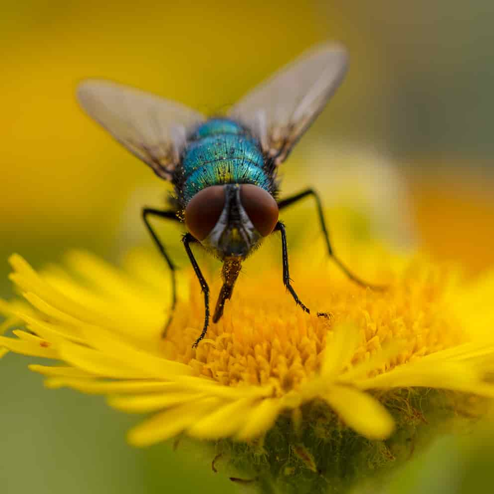
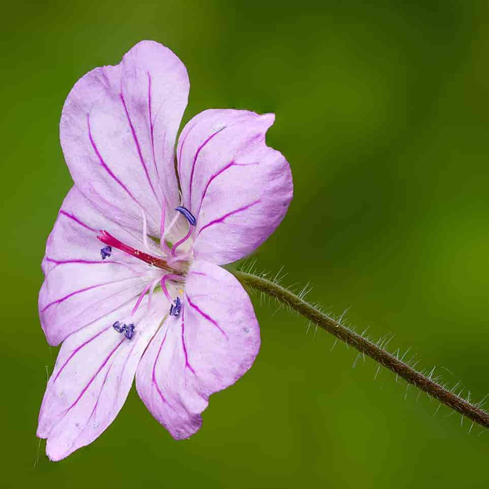
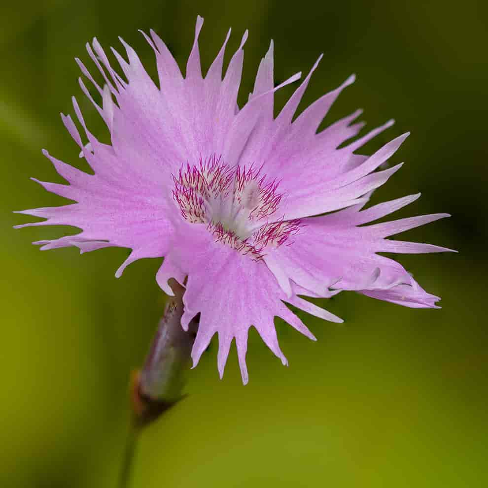

Gallery
Step into a world of delicate textures, hidden details, and tiny moments brought to life. This collection showcases my macro photography of flowers and insects , each image revealing the beauty that often goes unnoticed — the shimmer of a wing, the curve of a petal, the quiet stillness of a creature at rest. Every photograph in this gallery is available to purchase for £50, presented as a high‑quality digital image suitable for printing or display. These pieces are created with care, patience, and a deep appreciation for the small wonders of the natural world. All images are copyright protected. If you wish to use an image commercially, reproduce it, or request a licence, please get in touch to discuss permissions at messagemelody@icloud.com. Otherwise click the button to to buy a print below.
iv>
Common green bottle fly
The common green bottle fly or Lucilia sericata is a blowfly found in most areas of the world and is the most well-known of the numerous green bottle fly species. It is slightly larger than a house fly and has brilliant, metallic, blue-green or golden coloration with black markings.
Buy Me
Ox-eye Daisy
Leucanthemum vulgare, commonly known as the ox-eye daisy, oxeye daisy, dog daisy, marguerite (French: Marguerite commune, "common marguerite") and other common names, is a widespread flowering plant native to Europe and the temperate regions of Asia, and an introduced plant to North America, Australia and New Zealand.
Buy Me
Thistle Gall Fly
This is the Urophora cardui or the Canada thistle gall fly is a fruit fly which, contrary to its common name, is indigenous to Central Europe from the United Kingdom east to near the Crimea, and from Sweden south to the Mediterranean.
Buy Me
Yellow Dung fly
This is the Scathophaga stercoraria , commonly known as the yellow dung fly is one of the most familiar and abundant flies in many parts of the Northern Hemisphere. As its common name suggests, it is often found on the feces of large mammals, such as horses, cattle, sheep, deer, and wild boar, where it goes to breed. The distribution is likely influenced by human agriculture, especially in Northern Europe and North America..
Buy Me
Hedgerow Cranesbill
This is the Geranium pyrenaicum , otherwise known as hedgerow cranesbillis a perennial species of plant in the family Geraniaceae . It can be found on roadside verges and along hedgerows.
Buy Me
Poppy
This is the Papaver rhoeas, also known as the common poppy. It is native to north Africa and temperate Eurasia and is introduced into temperate areas on all other continents except Antarctica.
Buy Me
Thrift
This is the Armeria is a genus of flowering plants. These plants are sometimes known as thrift. The genus counts over a hundred species, mostly native to the Mediterranean, although Armeria maritima is an exception, being distributed along the coasts of the Northern Hemisphere, including Ireland, parts of the United Kingdom such as Cornwall, and the Pembrokeshire Coast National Park in Wales.
Buy Me
Wood Cranesbill
Geranium sylvaticum, the wood cranesbill, is a species of hardy flowering plant in the family Geraniaceae, native to Europe and northern Turkey. The flowers yield a blue-gray dye that was used in ancient Europe to dye war cloaks, believing it would protect them in battle. For this reason it was called Odin's Grace.
Buy Me
Fringed Pink
Dianthus hyssopifolius, the fringed pink (a name it shares with Dianthus superbus), is a species of flowering plant in the family Caryophyllaceae. It is native to Portugal, Spain, and France, and it has been introduced to Great Britain.[1] A subshrub, it is available from commercial suppliersace.
Buy Me